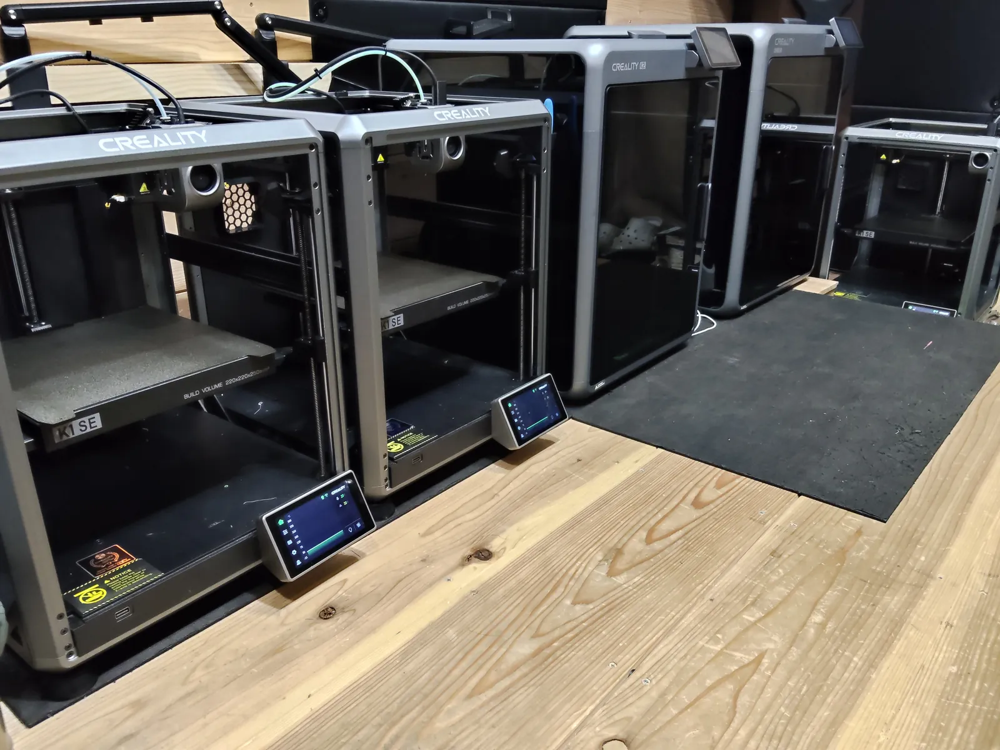

01 / WORKS
作品一覧
気になる作品をタップすると詳細を表示します。購入はメルカリ・ヤフオクからどうぞ。
MAKER
CATEGORY
※当工房の製品は、記載の工具に合わせてオリジナルに設計した互換品です。各メーカーの純正品・公式製品ではなく、各メーカーとは関係ありません。 メーカー名・品番は対応工具を示すために記載しています。
02 / CABINET
キャビネット収納イメージ
03 / CUSTOM
手持ちの工具に合わせて
作ります。
寸法はすべてパラメトリック設計（OpenSCAD・FreeCAD）なので、穴径・本数・角度・厚みの変更が得意です。 「この工具が入るホルダーが欲しい」「工具箱の引き出しに収まる幅で」など、まずはお気軽にご相談ください。
- SIZE穴径・深さ・本数・間隔の指定
- ANGLE立て掛け角度の調整（工具箱の高さに合わせて）
- MOUNTマグネット / ビス留め / 直置き
- COLORカラー指定（在庫フィラメントから）
- SHIP厚み30mm以内ならネコポス・クリックポストで発送
04 / FLOW
ご注文の流れ
-
01
作品を選ぶ
このサイトで作品をご覧いただき、メルカリまたはヤフオクの出品ページへ。
-
02
コメントで相談
サイズ変更・カラー指定などは、出品ページのコメントでお知らせください。
-
03
製作
ご注文後に造形します。カスタム品は寸法を確認してから製作に入ります。
-
04
発送
ネコポス・クリックポスト・宅急便コンパクトなど、サイズに合わせた方法でお届けします。

05 / ABOUT
工房について
のあくろ工房は、工具好きの個人工房です。自分の工具箱を整理するために作り始めたホルダーが、 同じ悩みを持つ方に使っていただけるようになりました。
Creality K1 SE・K1C・K2・K2 Pro の計6台で製作。工具ごとの実測データをもとに設計し、 試作して実物で確かめてから販売しています。
※当工房の製品はオリジナル設計の互換品です。各工具メーカーの純正品・公式製品ではありません。 記載のメーカー名・品番は対応工具を示すためのものです。
06 / FAQ
よくあるご質問
出品されていない作品も買えますか？
はい。過去作品や一覧にないサイズも製作できます。メルカリ・ヤフオクの出品ページのコメント欄からご相談ください。専用出品をご用意します。
素材は何ですか？
作品により PLA / PETG / ABS / TPU を使い分けています。屋外や車内で使うものは耐熱性の高い素材をおすすめします。
自分の工具に合うか不安です。
工具の品番か、実測寸法（直径・長さなど）をお知らせいただければ、収まるかどうかお答えします。
納期はどれくらいですか？
在庫品は数日以内に発送します。カスタム品は内容によりますが、目安は1〜2週間です。
3Dプリント品の見た目はどうですか？
表面に積層の筋（レイヤー跡）が見えるのが3Dプリントの特徴です。強度や使用に問題はありません。